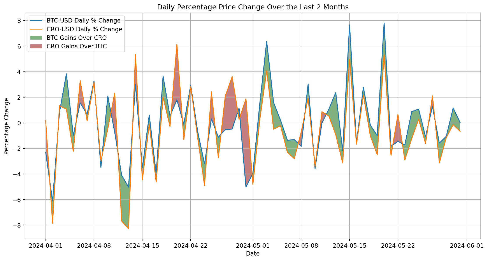
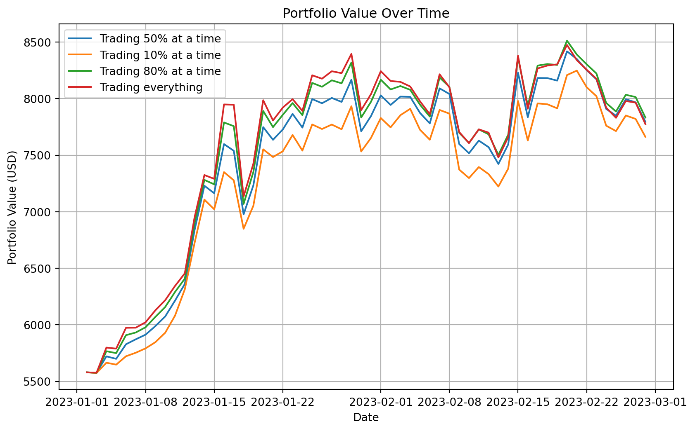
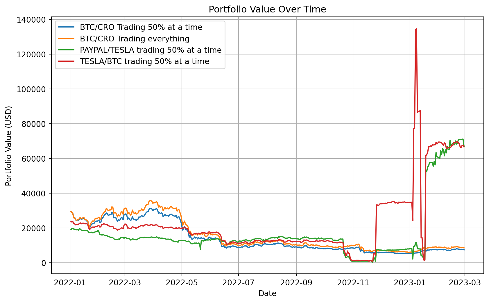
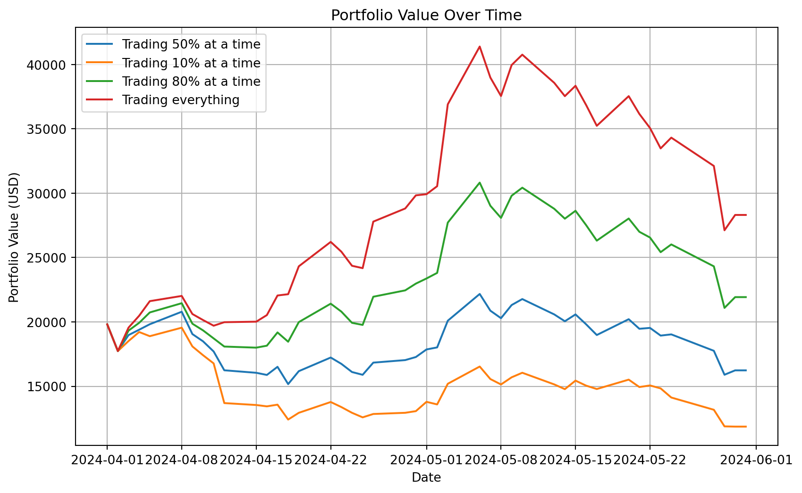

# ResultsOn higher risks yielding higher rewards
0.1 Abstract
Navigating today’s financial markets to find an investment strategy is overwhelming. The abundance of data, ideas & stories available is more than ever before.
This scientific journal targets hobbyists who use regular apps for trading, with a focus on a simple strategy known as pairs trading.
Pairs trading involves choosing two financial instruments, typically stocks, that historically show a strong correlation in their price movements. The core idea is that these instruments’ prices tend to move together, and deviations from this correlation can create profitable trading opportunities.
Here’s how the strategy works:
Identify a Pair: Select two securities that have historically moved together in price. Monitor the Spread: Watch the price difference between the two securities. When this difference deviates significantly from its usual range, it suggests a trading opportunity.
Enter the Trade:
- Long Position: Buy the security that is cheaper than usual compared to its pair.
- Short Position: Sell the security that is more expensive than usual compared to its pair.
Convergence: The trade becomes profitable when the price difference returns to its normal range, as the prices of the two securities move back in sync.
This scientific journal is a straightforward study on flipping pairs, helping hobbyists better understand why and how they do it this way.
Using modern tools for scientific-grade research like NumPy, Pandas, Matplotlib, LLMs & prompt engineering & Jupyter. We concluded that using the most volatile pairs in the market tend to yield the best rewards for this particular average joe strategy.
The study concludes that when aiming for the highest profits, flipping shitcoins is the way to go
0.2 Methodology
The methodology of this study is best described by splitting it into 2 subsections, tooling & process.
0.2.1 Tooling
The author of this study is not an experienced statician, actuarial scientist nor a data engineer.
I am a software engineer that’s worked with Ruby/Rails & Node.js. I wanted to use Python & it’s data science ecosystem for the study without having to invest a large amount of time picking up a new syntax and set of libraries.
With new AI on the table, I decided to preload an LLM with the relevant context & guide as if I was a technical lead guiding a developer through a tech stack I’m not savvy in. With that in mind, here’s the full list of tools & techniques I used as-is to set this up:
- Yahoo Finance for fetching financial instrument pricing data in a timeseries format
- Binancce for fetching cryptocurrency financial instrument pricing data in a timeseries format
- Python as the programming platform for the study
- Numpy for array manipulation
- Pandas for data analysis
- Matplotlib for data visualisation
- Jupyter Notebook for organising everything together in a readable format
- Quarto for technical publishing
- Distill for inspiration on producing high grade scientific-style journals
- Modelling and simulation in Pyhon for modelling the investment strategy
- ChatGPT for bridging human language to Python syntax, albeit all the code was reviewed by me
- I also bounced ideas off a colleague. Shout out Kira McLean & Scicloj
0.2.2 Process
The code for this study can be found on the @shellandbull/higher-risk-higher-rewards
Using personal, hobbyist-level, financial investment knowledge a pairs trading strategy was devised. The strategy is fairly simple
2 Financial instruments are selected, let us call them A & B. This flavour of pairs trading relies on actively tracking price changes between the 2 instruments to maximise gains by buying/selling them against each other. Let us go over an iteration of the strategy
We start with 1 Bitcoin and 220 Tesla stocks
| BTC/USD - Price | BTC/USD - Amount | TSLA/USD - Price | TSLA/USD - Amount | Portfolio Value |
|---|---|---|---|---|
60,000 |
1.00 |
220 |
200 |
$104,000 |
Time goes by, and the prices change slightly. Bitcoin became more expensive, Tesla became cheaper.
| BTC/USD - Price | BTC/USD - Amount | TSLA/USD - Price | TSLA/USD - Amount | Portfolio Value |
|---|---|---|---|---|
63,000 |
1.00 |
190 |
200 |
$101,000 |
An opportunity pops out the water to say “What’s upppppp dawg”.
We allocate .3 BTC so $18,900 into Tesla. This means we bought 99.47 Tesla stocks
| BTC/USD - Price | BTC/USD - Amount | TSLA/USD - Price | TSLA/USD - Amount | Portfolio Value |
|---|---|---|---|---|
63,000 |
0.7 |
190 |
200 + 99.47 = 299.47 |
$100,999 |
P.D: I dropped some decimal points without rounding which is why the value of the portfolio fluctuated down. We can theorise these are trading fees to make the study seem more realistic
The market moves again. Bitcoin maintains it’s price while Tesla recovers
| BTC/USD - Price | BTC/USD - Amount | TSLA/USD - Price | TSLA/USD - Amount | Portfolio Value |
|---|---|---|---|---|
63,000 |
0.7 |
220 |
299.47 |
$109,983.4 |
A profit of $5,983.4 is retained. Voila!
This of course, is a far cry from a perfect strategy. A few challenges come to mind:
- What if the price fluctuations do not benefit me?
- What if the market does not accept my order volumes recurrently?
- What if the investor does not have the resources to monitor the price in a fashion where benefits can be actioned upon?
This study doesn’t aim to give the reader a Moneyball on investing. If that was the case the author would be writing this study from some highly valued real state investment whereas I am now sitting in my humble home with a cat sitting on my lap.
This strategy is far from perfect, there isn’t a guarantee on price fluctuations sailing your way. What can be done, is to measure the number of “opportunities” that existed in the past across any tuple of financial instruments to best determine what instrument set to use.
With the strategy and tools set into place it becomes a matter of guiding an LLM across the study. The modus operandi for guiding the LLM across building the study is as follows:
- Using prompt engineering practices, the LLM is preloaded with industry specific context, such as books & articles
- The LLM is instructed to adopt a personality(a cluster of adjectives) to fit the deliverable. A scientific-journal grade article
- An experiment is formulated without a hypothesis. The LLM is just requested to count, parse & draw data
- A decision model is structured by a human after inspecting the data and formulating a hypothesis
- The LLM is instructed to plot the decision model, code is generated by the LLM
- The code is inspected by hand with a fine tooth comb, this involves bug fixes and styling changes
- With a usable study, further hypothesis are formulated. There are now new grounds to perform the same steps over the new questions
- Rinse & repeat until a full study is built
WARNING This scientific journal styled blog post is a live piece of knowledge that’s actively under development. It aims to study the progress of LLMs in the context of financial investigation & research on top of it’s actual objective
hic sunt dracones, there can be bugs. If you find one please submit a PR on the repo @shellandbull/higher-risk-higher-rewards
1 Looking at potential trading margins
The gains of a potential speculative strategy are studied by plotting 2 pairs
BTC/USDCRO/USD
It’s a simple “buy low and sell high” trading strategy only using these 2 instruments. I visualise what my potential margins are by plotting the % price change of the two on the same timeseries whilst highlighting filling only the areas where one offsets against the other. In layman terms: the coloured areas are the moments where we can make money
%run scripts/daily_change.py[ 0%% ][*********************100%%**********************] 2 of 2 completed
2 Putting it to the test
The visualisation shows me that there’s room for margins, however. How will this behave in the wild?
I create a simple strategy with some rules:
- On every tick, we compute the percentual change of both instruments vs the day before
- if the change of one is greater than the other. e,g: BTC became more expensive than CRO
- We buy CRO with BTC
- We rinse & repeat
%run scripts/basic_speculation.py[ 0%% ][*********************100%%**********************] 2 of 2 completed
3 Measuring different strategies
Now that a foundation is set, I can draw N strategies on the canvas to measure how different approaches increase my portfolio value. A proposed problem for ML to solve would be to:
- Optimise the parameters to find the best strategy
- Optimise the parameters to find the best instruments
- Optimise the parameters to find the best trading frequency
🌟 The outcome is to have the highest portfolio value which makes it very simple
%run scripts/multi_strategy_speculation.py[ 0%% ][*********************100%%**********************] 2 of 2 completed
4 A practical example, measuring strategies
BTC & CRO aren’t the only 2 instruments on the market. What if we grabbed another pair? I went for TSLA and PYPL
We can also mix and match
%run scripts/multi_instrument_multi_strategy.py[ 0%% ][*********************100%%**********************] 2 of 2 completed
[ 0%% ][*********************100%%**********************] 2 of 2 completed
[ 0%% ][*********************100%%**********************] 2 of 2 completed
5 Programmatically finding the best pair to trade
A successful gain occurs when we “flip” twice and the price variation was always on our side.
Using historical data we can look at every single possible combination of financial instruments that over the last 1 year yield the maximum gains
We can then rank them and come up with a top 3 or 5. The algorithm to find this pair is very simple
- Take all financial instruments and iterate over each one
- Inside that loop, iterate again over each one
- Now we have any financial instrument pair available on scope
- For each pair, with historical data to a year, count the number of instances where
- Any 2 trades yielded a gain. Said percentual gain can be computed numerically
- This new value becomes a ranking criteria to sort by as our new data structure is a pair made up of 2 instruments
I’ll come up with the top pairs of instruments to trade. The script can be found here. It must be run on the background due to its data size
scripts/top_pairs_to_trade.pyimport pandas as pd
# Load CSV file into DataFrame
df = pd.read_csv('data/selected_pairs.csv')
df| pair | score | |
|---|---|---|
| 0 | AISP / AULT | 2047.352423 |
| 1 | AULT / AISP | 2047.352423 |
| 2 | WTO / SBFM | 1995.649214 |
| 3 | FET-USD / AXL17799-USD | 1323.654462 |
| 4 | AXL17799-USD / FET-USD | 1323.654462 |
| ... | ... | ... |
| 439 | JTAIZ / GCTS | 4489.530701 |
| 440 | JAGX / JTAIZ | 4426.418104 |
| 441 | CFG-USD / FTT-USD | 1721.783582 |
| 442 | FTT-USD / CFG-USD | 1721.783582 |
| 443 | GRI / FTT-USD | 1609.159168 |
444 rows × 2 columns
6 Scoring combinations
We now have a list with ~450 entries of stock pairs.
The score is the absolute value of each days percentual price change aggregation difference between the 2. This way we can see who has the most gains. Let’s try to see how a pair of these fairs on my previous simulation
Here we trade CXAI and ZETA-USD
%run scripts/daily_change_top.py[ 0%% ][*********************100%%**********************] 2 of 2 completed
/Users/xyzxyz/dev/higher-risk-higher-rewards/docs/scripts/daily_change_top.py:12: FutureWarning:
The default fill_method='pad' in DataFrame.pct_change is deprecated and will be removed in a future version. Either fill in any non-leading NA values prior to calling pct_change or specify 'fill_method=None' to not fill NA values.
7 Conclusion
It appears that trading low-market-cap cryptocurrencies, colloquially known as “shitcoins,” presents a significant speculative opportunity for substantial financial gain.
Given that this is an early-stage study, further refinements and adaptations are necessary.
Preliminary results indicate a potential doubling of capital when trading these assets over the past two months.
%run scripts/top_multi_strategy_speculation.py[ 0%% ][*********************100%%**********************] 2 of 2 completed
8 Contact me
If you enjoyed reading this or have any observations to make please do reach out on Github @shellandbull, Linkedin or email at mariojgintili at gmail dot com